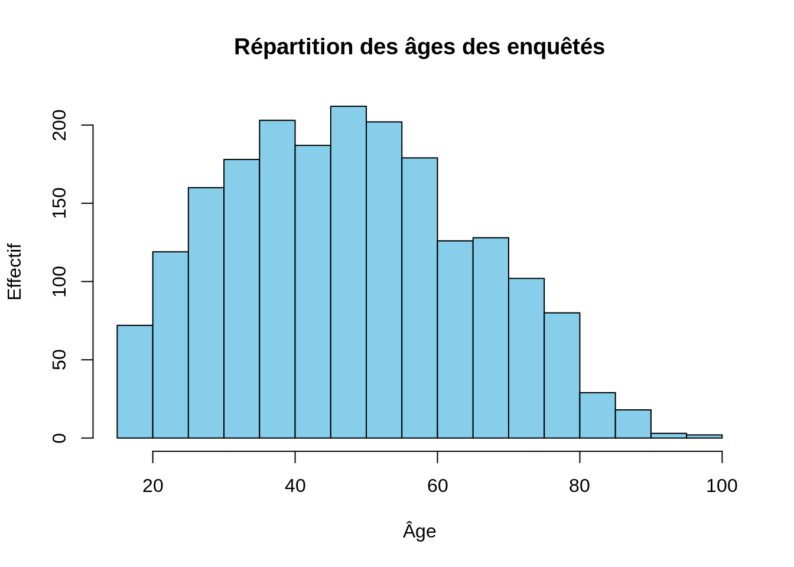
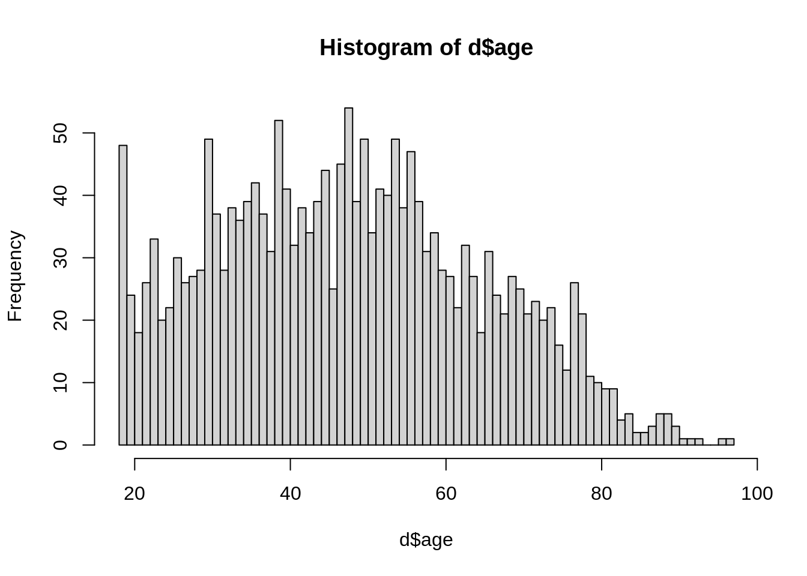
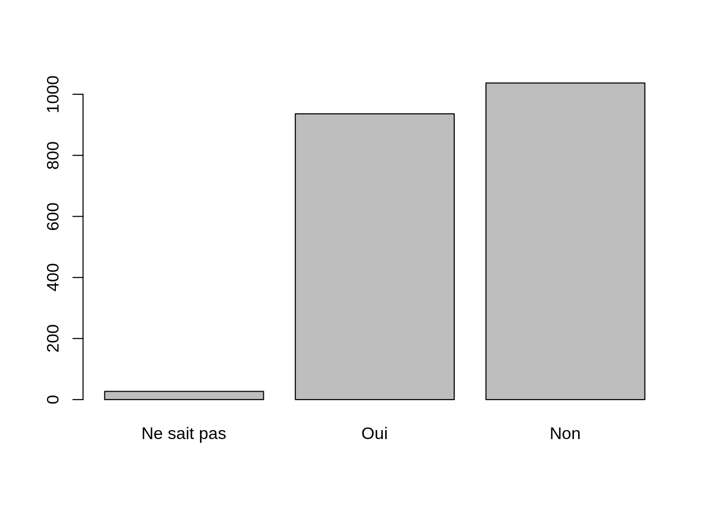
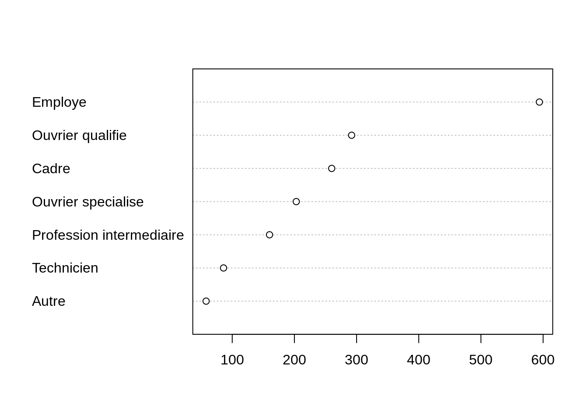
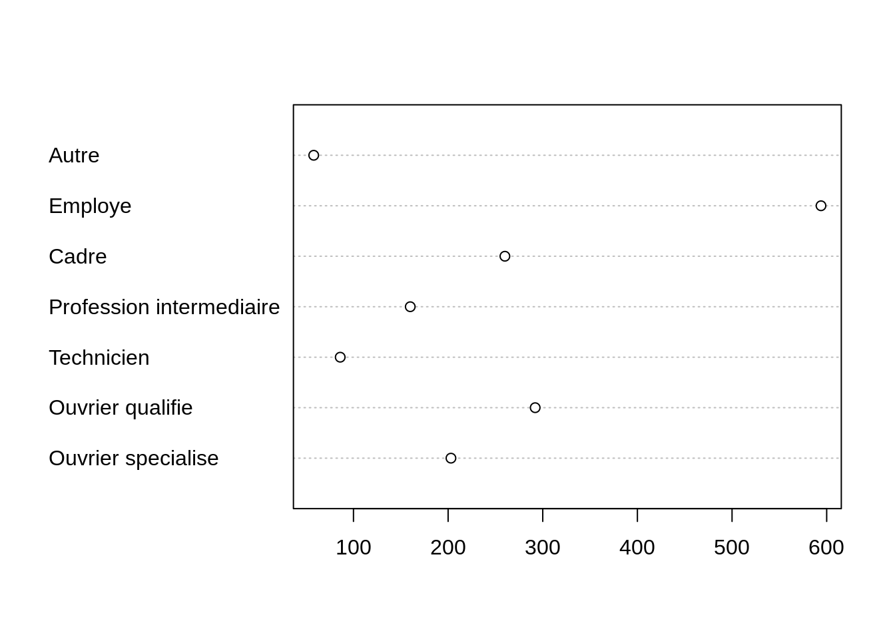

Partie 3 Premier travail avec des données
3.1 Jeu de données d’exemple
Dans cette partie nous allons (enfin) travailler sur des “vraies” données, et utiliser un jeu de données présent dans l’extension questionr. Nous devons donc avant toute chose installer cette extension.
Pour installer ce package, deux possibilités :
- Dans l’onglet Packages de la zone de l’écran en bas à droite, cliquez sur le bouton Install. Dans le dialogue qui s’ouvre, entrez “questionr” dans le champ Packages puis cliquez sur Install.
- Saisissez directement la commande suivante dans la console :
install.packages("questionr")
Dans les deux cas, tout un tas de messages devraient s’afficher dans la console. Attendez que l’invite de commandes > apparaisse à nouveau.
Pour plus d’informations sur les extensions et leur installation, voir la section 2.5.
Le jeu de données que nous allons utiliser est un extrait de l’enquête Histoire de vie réalisée par l’INSEE en 2003. Il contient 2000 individus et 20 variables. Pour une description plus complète et une liste des variables, voir la section A.3.2.2.
Pour pouvoir utiliser ces données, il faut d’abord charger l’extension questionr (après l’avoir installée, bien entendu) :
L’utilisation de library permet de rendre “disponibles”, dans notre session R, les fonctions et jeux de données inclus dans l’extension.
Nous devons ensuite indiquer à R que nous souhaitons accéder au jeu de données à l’aide de la commande data :
Cette commande ne renvoie aucun résultat particulier (sauf en cas d’erreur), mais vous devriez voir apparaître dans l’onglet Environment de RStudio un nouvel objet nommé hdv2003.

Onglet Environment
Cet objet est d’un type nouveau : il s’agit d’un tableau de données.
3.2 Tableau de données (data frame)
Un data frame (ou tableau de données, ou table) est un type d’objet R qui contient des données au format tabulaire, avec les observations en ligne et les variables en colonnes, comme dans une feuille de tableur de type LibreOffice ou Excel.
Si on se contente d’exécuter le nom de notre tableau de données R va, comme à son habitude, nous l’afficher dans la console, ce qui est tout sauf utile.
Une autre manière d’afficher le contenu du tableau est de cliquer sur l’icône en forme de tableau à droite du nom de l’objet dans l’onglet Environment :
View icon
Ou d’utiliser la fonction View :
Dans les deux cas votre tableau devrait s’afficher dans RStudio avec une interface de type tableur :

Interface “View”
Il est important de comprendre que l’objet hdv2003 contient l’intégralité des données du tableau.
On voit donc qu’un objet peut contenir des données de types très différents (simple nombre, texte, vecteur, tableau de données entier), et être potentiellement de très grande taille6.
Sous R, on peut importer ou créer autant de tableaux de données qu’on le souhaite, dans les limites des capacités de sa machine.
Un data frame peut être manipulé comme les autres objets vus précédemment. On peut par exemple faire :
ce qui va entraîner la copie de l’ensemble de nos données dans un nouvel objet nommé d. Ceci peut paraître parfaitement inutile mais a en fait l’avantage de fournir un objet avec un nom beaucoup plus court, ce qui diminuera la quantité de texte à saisir par la suite.
Pour résumer, comme nous avons désormais décidé de saisir nos commandes dans un script et non plus directement dans la console, les premières lignes de notre fichier de travail sur les données de l’enquête Histoire de vie pourraient donc ressembler à ceci :
## Chargement des extensions nécessaires
library(questionr)
## Jeu de données hdv2003
data(hdv2003)
d <- hdv20033.2.1 Structure du tableau
Un tableau étant un objet comme un autre, on peut lui appliquer des fonctions. Par exemple, nrow et ncol retournent le nombre de lignes et de colonnes du tableau.
La fonction dim renvoie ses dimensions, donc les deux nombres précédents.
La fonction names retourne les noms des colonnes du tableau, c’est-à-dire la liste de nos variables.
names(d)
#> [1] "id" "age" "sexe" "nivetud"
#> [5] "poids" "occup" "qualif" "freres.soeurs"
#> [9] "clso" "relig" "trav.imp" "trav.satisf"
#> [13] "hard.rock" "lecture.bd" "peche.chasse" "cuisine"
#> [17] "bricol" "cinema" "sport" "heures.tv"Enfin, la fonction str renvoie un descriptif plus détaillé de la structure du tableau. Elle liste les différentes variables, indique leur type 7 et affiche les premières valeurs.
str(d)
#> 'data.frame': 2000 obs. of 20 variables:
#> $ id : int 1 2 3 4 5 6 7 8 9 10 ...
#> $ age : int 28 23 59 34 71 35 60 47 20 28 ...
#> $ sexe : Factor w/ 2 levels "Homme","Femme": 2 2 1 1 2 2 2 1 2 1 ...
#> $ nivetud : Factor w/ 8 levels "N'a jamais fait d'etudes",..: 8 NA 3 8 3 6 3 6 NA 7 ...
#> $ poids : num 2634 9738 3994 5732 4329 ...
#> $ occup : Factor w/ 7 levels "Exerce une profession",..: 1 3 1 1 4 1 6 1 3 1 ...
#> $ qualif : Factor w/ 7 levels "Ouvrier specialise",..: 6 NA 3 3 6 6 2 2 NA 7 ...
#> $ freres.soeurs: int 8 2 2 1 0 5 1 5 4 2 ...
#> $ clso : Factor w/ 3 levels "Oui","Non","Ne sait pas": 1 1 2 2 1 2 1 2 1 2 ...
#> $ relig : Factor w/ 6 levels "Pratiquant regulier",..: 4 4 4 3 1 4 3 4 3 2 ...
#> $ trav.imp : Factor w/ 4 levels "Le plus important",..: 4 NA 2 3 NA 1 NA 4 NA 3 ...
#> $ trav.satisf : Factor w/ 3 levels "Satisfaction",..: 2 NA 3 1 NA 3 NA 2 NA 1 ...
#> $ hard.rock : Factor w/ 2 levels "Non","Oui": 1 1 1 1 1 1 1 1 1 1 ...
#> $ lecture.bd : Factor w/ 2 levels "Non","Oui": 1 1 1 1 1 1 1 1 1 1 ...
#> $ peche.chasse : Factor w/ 2 levels "Non","Oui": 1 1 1 1 1 1 2 2 1 1 ...
#> $ cuisine : Factor w/ 2 levels "Non","Oui": 2 1 1 2 1 1 2 2 1 1 ...
#> $ bricol : Factor w/ 2 levels "Non","Oui": 1 1 1 2 1 1 1 2 1 1 ...
#> $ cinema : Factor w/ 2 levels "Non","Oui": 1 2 1 2 1 2 1 1 2 2 ...
#> $ sport : Factor w/ 2 levels "Non","Oui": 1 2 2 2 1 2 1 1 1 2 ...
#> $ heures.tv : num 0 1 0 2 3 2 2.9 1 2 2 ...À noter que sous RStudio, on peut afficher à tout moment la structure d’un objet en cliquant sur l’icône de triangle sur fond bleu à gauche du nom de l’objet dans l’onglet Environment.

Structure d’un objet
3.2.2 Accéder aux variables d’un tableau
Une opération très importante est l’accès aux variables du tableau (à ses colonnes) pour pouvoir les manipuler, effectuer des calculs, etc. On utilise pour cela l’opérateur $, qui permet d’accéder aux colonnes du tableau. Ainsi, si l’on tape :
d$sexe
#> [1] Femme Femme Homme Homme Femme Femme Femme Homme Femme Homme Femme Homme
#> [13] Femme Femme Femme Femme Homme Femme Homme Femme Femme Homme Femme Femme
#> [25] Femme Homme Femme Homme Homme Homme Homme Homme Homme Homme Femme Femme
#> [37] Homme Femme Femme Homme Femme Homme Homme Femme Femme Homme Femme Femme
#> [49] Femme Femme Homme Femme Homme Femme Homme Femme Femme Femme Homme Femme
#> [61] Femme Homme Homme Homme Homme Femme Homme Homme Femme Femme Homme Homme
#> [73] Femme Femme Femme Femme Homme Femme Femme Femme Femme Femme Femme Homme
#> [85] Homme Femme Homme Homme Homme Homme Homme Femme Homme Femme Femme Femme
#> [97] Homme Homme Femme Femme Femme Homme Femme Homme Homme Femme Femme Femme
#> [109] Femme Homme Homme Homme Homme Homme Femme Homme Homme Femme Homme Homme
#> [121] Femme Femme Femme Homme Femme Femme Homme Femme Femme Homme Femme Homme
#> [133] Femme Femme Femme Homme Homme Homme Homme Homme Homme Homme Homme Femme
#> [145] Homme Homme Homme Femme Femme Femme Homme Femme Femme Femme Femme Homme
#> [157] Femme Homme Homme Homme Femme Homme Femme Homme Femme Homme Homme Femme
#> [169] Femme Femme Homme Femme Homme Femme Femme Femme Homme Homme Homme Femme
#> [181] Homme Femme Femme Homme Homme Femme Femme Femme Femme Femme Homme Homme
#> [193] Femme Homme Homme Femme Homme Femme Homme Femme
#> [ reached getOption("max.print") -- omitted 1800 entries ]
#> Levels: Homme FemmeR va afficher l’ensemble des valeurs de la variable sexe dans la console, ce qui est à nouveau fort peu utile. Mais cela nous permet de constater que d$sexe est un vecteur de chaînes de caractères tels qu’on en a déjà rencontré précédemment.
La fonction table$colonne renvoie donc la colonne nommée colonne du tableau table, c’est-à-dire un vecteur, en général de nombres ou de chaînes de caractères.
Si on souhaite afficher seulement les premières ou dernières valeurs d’une variable, on peut utiliser les fonctions head et tail.
Le deuxième argument numérique permet d’indiquer le nombre de valeurs à afficher.
3.2.3 Créer une nouvelle variable
On peut aussi utiliser l’opérateur $ pour créer une nouvelle variable dans notre tableau : pour cela, il suffit de lui assigner une valeur.
Par exemple, la variable heures.tv contient le nombre d’heures passées quotidiennement devant la télé.
On peut vouloir créer une nouvelle variable dans notre tableau qui contienne la même durée convertie en minutes. On va donc créer une nouvelle variables minutes.tv de la manière suivante :
On peut alors constater, soit visuellement soit dans la console, qu’une nouvelle variable (une nouvelle colonne) a bien été ajoutée au tableau.
3.3 Analyse univariée
On a donc désormais accès à un tableau de données d, dont les lignes sont des observations (des individus enquêtés), et les colonnes des variables (des caractéristiques de chacun de ces individus), et on sait accéder à ces variables grâce à l’opérateur $.
Si on souhaite analyser ces variables, les méthodes et fonctions utilisées seront différentes selon qu’il s’agit d’une variable quantitative (variable numérique pouvant prendre un grand nombre de valeurs : l’âge, le revenu, un pourcentage…) ou d’une variable qualitative (variable pouvant prendre un nombre limité de valeurs appelées modalités : le sexe, la profession, le dernier diplôme obtenu, etc.).
3.3.1 Analyser une variable quantitative
Une variable quantitative est une variable de type numérique (un nombre) qui peut prendre un grand nombre de valeurs. On en a plusieurs dans notre jeu de données, notamment l’âge (variable age) ou le nombre d’heures passées devant la télé (heures.tv).
3.3.1.1 Indicateurs de centralité
Caractériser une variable quantitative, c’est essayer de décrire la manière dont ses valeurs se répartissent, ou se distribuent.
Pour cela on peut commencer par regarder les valeurs extrêmes, avec les fonctions min, max ou range.
On peut aussi calculer des indicateurs de centralité : ceux-ci indiquent autour de quel nombre se répartissent les valeurs de la variable. Il y en a plusieurs, le plus connu étant la moyenne, qu’on peut calculer avec la fonction mean.
Il existe aussi la médiane, qui est la valeur qui sépare notre population en deux : on a la moitié de nos observations en-dessous, et la moitié au-dessus. Elle se calcule avec la fonction median.
Une différence entre les deux indicateurs est que la médiane est beaucoup moins sensible aux valeurs “extrêmes” : on dit qu’elle est plus robuste. Ainsi, en 2019, le salaire net moyen des salariés à temps plein dans le secteur privé en France était de 2424 euros, tandis que le salaire net médian n’était que de 1940 euros. La différence étant due à des très hauts salaires qui “tirent” la moyenne vers le haut.
3.3.1.2 Indicateurs de dispersion
Les indicateurs de dispersion permettent de mesurer si les valeurs sont plutôt regroupées ou au contraire plutôt dispersées.
L’indicateur le plus simple est l’étendue de la distribution, qui décrit l’écart maximal observé entre les observations :
Les indicateurs de dispersion les plus utilisés sont la variance ou, de manière équivalente, l’écart-type (qui est égal à la racine carrée de la variance). On obtient la première avec la fonction var, et le second avec sd (abbréviation de standard deviation).
Plus la variance ou l’écart-type sont élevés, plus les valeurs sont dispersées autour de la moyenne. À l’inverse, plus ils sont faibles et plus les valeurs sont regroupées.
Une autre manière de mesurer la dispersion est de calculer les quartiles :
- le premier quartile est la valeur pour laquelle on a 25% des observations en dessous et 75% au dessus
- le deuxième quartile est la valeur pour laquelle on a 50% des observations en dessous et 50% au dessus (c’est donc la médiane)
- le troisième quartile est la valeur pour laquelle on a 75% des observations en dessous et 25% au dessus
On peut les calculer avec la fonction quantile :
quantile prend deux arguments principaux : le vecteur dont on veut calculer le quantile, et un argument prob qui indique quel quantile on souhaite obtenir. prob prend une valeur entre 0 et 1 : 0.5 est la médiane, 0.25 le premier quartile, 0.1 le premier décile, etc.
Notons enfin que la fonction summary permet d’obtenir d’un seul coup plusieurs indicateurs classiques :
3.3.1.3 Représentation graphique
L’outil le plus utile pour étudier la distribution des valeurs d’une variable quantitative reste la représentation graphique.
La représentation la plus courante est sans doute l’histogramme. On peut l’obtenir avec la fonction hist.
Cette fonction n’a pas pour effet direct d’effectuer un calcul ou de nous renvoyer un résultat : elle génère un graphique qui va s’afficher dans l’onglet Plots de RStudio.
On peut personnaliser l’apparence de l’histogramme en ajoutant des arguments supplémentaires à la fonction hist. L’argument le plus important est breaks, qui permet d’indiquer le nombre de classes que l’on souhaite.

Le choix d’un “bon” nombre de classes pour un histogramme n’est pas un problème simple : si on a trop peu de classes, on risque d’effacer quasiment toutes les variations, et si on en a trop on risque d’avoir trop de détails et de masquer les grandes tendances.
Les arguments de hist permettent également de modifier la présentation du graphique. On peut ainsi changer la couleur des barres avec col8, le titre avec main, les étiquettes des axes avec xlab et ylab, etc. :
hist(d$age, col = "skyblue",
main = "Répartition des âges des enquêtés",
xlab = "Âge",
ylab = "Effectif")
La fonction hist fait partie des fonctions graphique de base de R. On verra plus en détail d’autres fonctions graphiques dans la partie 8 de ce document, consacrée à l’extension ggplot2, qui fait partie du tidyverse et qui permet la production et la personnalisation de graphiques complexes.
3.3.2 Analyser une variable qualitative
Une variable qualitative est une variable qui ne peut prendre qu’un nombre limité de valeurs, appelées modalités. Dans notre jeu de données on trouvera par exemple le sexe (sexe), le niveau d’études (nivetud), la catégorie socio-professionnelle (qualif)…
À noter qu’une variable qualitative peut tout-à-fait être numérique, et que certaines variables peuvent être traitées soit comme quantitatives, soit comme qualitatives : c’est le cas par exemple du nombre d’enfants ou du nombre de frères et soeurs.
3.3.2.1 Tri à plat
L’outil le plus utilisé pour représenter la répartition des valeurs d’une variable qualitative est le tri à plat : il s’agit simplement de compter, pour chacune des valeurs possibles de la variable (pour chacune des modalités), le nombre d’observations ayant cette valeur. Un tri à plat s’obtient sous R à l’aide de la fonction table.
Ce tableau nous indique donc que parmi nos enquêtés on trouve 899 hommes et 1101 femmes.
table(d$qualif)
#>
#> Ouvrier specialise Ouvrier qualifie Technicien
#> 203 292 86
#> Profession intermediaire Cadre Employe
#> 160 260 594
#> Autre
#> 58Un tableau de ce type peut être affiché ou stocké dans un objet, et on peut à son tour lui appliquer des fonctions. Par exemple, la fonction sort permet de trier le tableau selon la valeur de l’effectif.
tab <- table(d$qualif)
sort(tab)
#>
#> Autre Technicien Profession intermediaire
#> 58 86 160
#> Ouvrier specialise Cadre Ouvrier qualifie
#> 203 260 292
#> Employe
#> 594
Attention, par défaut la fonction table n’affiche pas les valeurs manquantes (NA). Si on souhaite les inclure il faut utiliser l’argument useNA = “always”, soit : table(d$qualif, useNA = “always”).
À noter qu’on peut aussi appliquer summary à une variable qualitative. Le résultat est également le tri à plat de la variable, avec en plus le nombre de valeurs manquantes éventuelles.
summary(d$qualif)
#> Ouvrier specialise Ouvrier qualifie Technicien
#> 203 292 86
#> Profession intermediaire Cadre Employe
#> 160 260 594
#> Autre NA's
#> 58 347Par défaut ces tris à plat sont en effectifs et ne sont pas toujours très lisibles, notamment quand on a des effectifs importants. On leur rajoute donc en général la répartition en pourcentages. Pour cela, nous allons utiliser la fonction freq de l’extension questionr, qui devra donc avoir précédemment été chargée avec library(questionr).
Une fois l’extension chargée on peut utiliser la fonction freq.
freq(d$qualif)
#> n % val%
#> Ouvrier specialise 203 10.2 12.3
#> Ouvrier qualifie 292 14.6 17.7
#> Technicien 86 4.3 5.2
#> Profession intermediaire 160 8.0 9.7
#> Cadre 260 13.0 15.7
#> Employe 594 29.7 35.9
#> Autre 58 2.9 3.5
#> NA 347 17.3 NALa colonne n représente les effectifs de chaque catégorie, la colonne % le pourcentage, et la colonne val% le pourcentage calculé sur les valeurs valides, donc en excluant les NA. Une ligne a également été rajoutée pour indiquer le nombre et la proportion de NA.
freq accepte un certain nombre d’arguments pour personnaliser son affichage. Par exemple :
validindique si on souhaite ou non afficher les pourcentages sur les valeurs validescumindique si on souhaite ou non afficher les pourcentages cumuléstotalpermet d’ajouter une ligne avec les effectifs totauxsortpermet de trier le tableau par fréquence croissante (sort="inc") ou décroissante (sort="dec").
3.3.2.2 Représentations graphiques
On peut représenter graphiquement le tri à plat d’une variable qualitative avec un diagramme en barres, obtenu avec la fonction barplot. Attention, contrairement à hist cette fonction ne s’applique pas directement à la variable mais au résultat du tri à plat de cette variable, calculé avec table. Il faut donc procéder en deux étapes.

On peut aussi trier le tri à plat avec la fonction sort avant de le représenter graphiquement, ce qui peut faciliter la lecture du graphique :

Une alternative au graphique en barres est le diagramme de Cleveland, qu’on peut obtenir avec la fonction dotchart. Celle-ci s’applique elle aussi au tri à plat de la variable calculé avec table.

Là aussi, pour améliorer la lisibilité du graphique il est préférable de trier le tri à plat de la variable avant de le représenter :

3.4 Exercices
Exercice 1
Créer un nouveau script qui effectue les actions suivantes :
- charger l’extension
questionr - charger le jeu de données nommé
hdv2003 - copier le jeu de données dans un nouvel objet nommé
df - afficher les dimensions et la liste des variables de
df
Exercice 2
On souhaite étudier la répartition du temps passé devant la télévision par les enquêtés (variable heures.tv). Pour cela, affichez les principaux indicateurs de cette variable : valeur minimale, maximale, moyenne, médiane et écart-type. Représentez ensuite sa distribution par un histogramme en 10 classes.
Exercice 3
On s’intéresse maintenant à l’importance accordée par les enquêtés à leur travail (variable trav.imp). Faites un tri à plat des effectifs des modalités de cette variable avec la commande table.
Faites un tri à plat affichant à la fois les effectifs et les pourcentages de chaque modalité. Y’a-t-il des valeurs manquantes ?
Représentez graphiquement les effectifs des modalités à l’aide d’un graphique en barres.
Utilisez l’argument col de la fonction barplot pour modifier la couleur du graphique en
tomato.
Tapez colors() dans la console pour afficher l’ensemble des noms de couleurs disponibles dans R. Testez chaque couleur une à une pour trouver votre couleur préférée.
C’est une blague, hein ! Cela dit moccasin ou palevioletred sont pas mal, si vous voulez essayer :-)
La seule limite pour la taille d’un objet étant la mémoire vive (RAM) de la machine sur laquelle tourne la session R.↩︎
Les différents types de variables seront décrits plus en détail dans le chapitre 9 sur les recodages.↩︎
Les différentes manières de spécifier des couleurs sont indiquées dans l’encadré de la section 8.7.3.↩︎